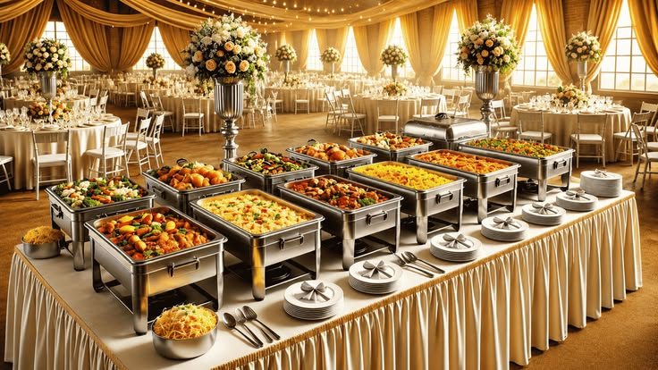
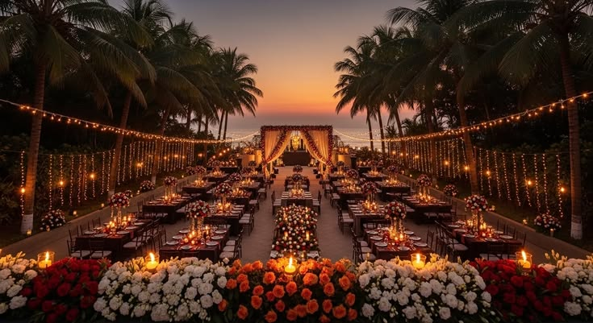
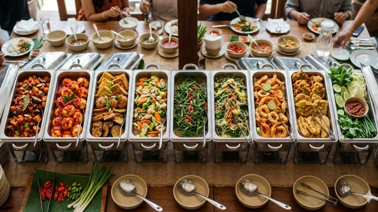

01 — Wedding feasts
Weddings
Thoughtful menus, polished timing and a calm team to hold every moment.
From intimate dinners to elegant weddings, our hospitality is designed to support your guests, your cuisine and your vision.
Thoughtful menus, polished timing and a calm team to hold every moment.

Chef-led meals and intimate hospitality in homes and private venues.

Refined food, clear coordination and premium service for launches, dinners and meetings.

Every proposal is custom. We recommend the right format, service style and timing based on your guest list and venue.
We adapt the service to your desired experience — relaxed, elegant or interactive.
Each event receives its own menu, pacing and service plan.
From an intimate home lunch to a thousand-person reception, we scale the kitchen, crew and service style without losing the personal touch.


Every format gets its own menu direction, floor plan and service rhythm. Select the feeling you want to create; we build the experience around it.
Generous leaf meals, reception spreads and graceful service through every ritual.
Warm hosting for birthdays, housewarmings and the people closest to you.
Confident menus and precise coordination for teams, clients and launches.
Thoughtful food moments for anniversaries, engagements and once-in-a-lifetime news.
We learn about your date, guests, venue, traditions and must-have dishes.
Your menu, counters, staffing and service sequence come together in one plan.
Our captains lead the day quietly, so you can be fully present with your guests.
Interactive counters add aroma, theatre and a freshly made moment to your event. Our chefs keep the queue moving and every plate beautifully finished.
Plan a live counterA practical proposal with menu, staff and service timings.
Quality-led preparation timed around your event.
A polished guest experience from welcome to farewell.